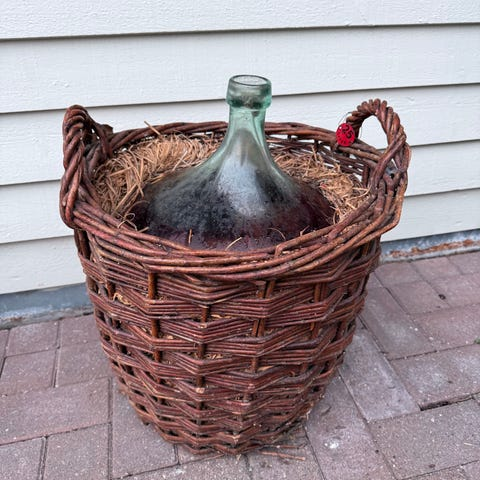
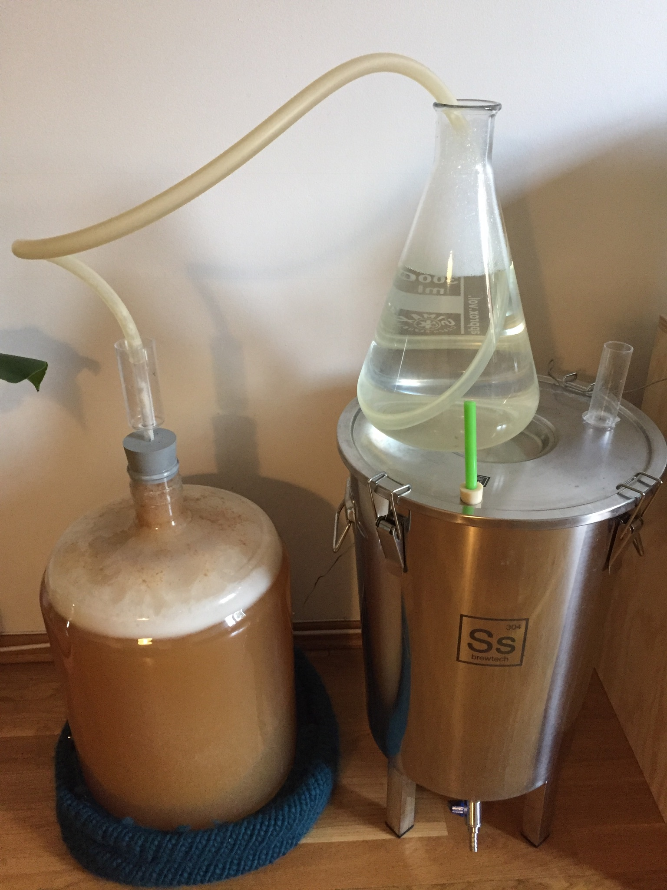
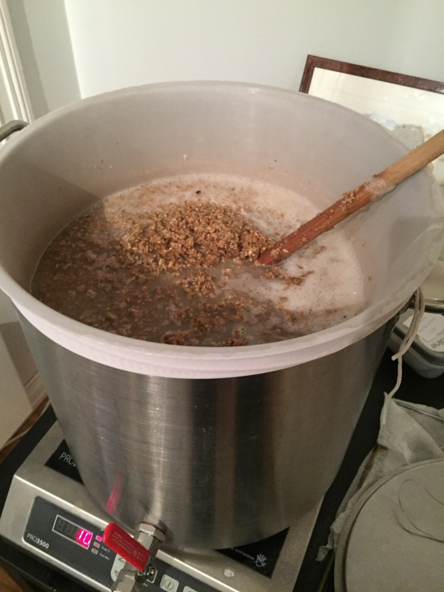
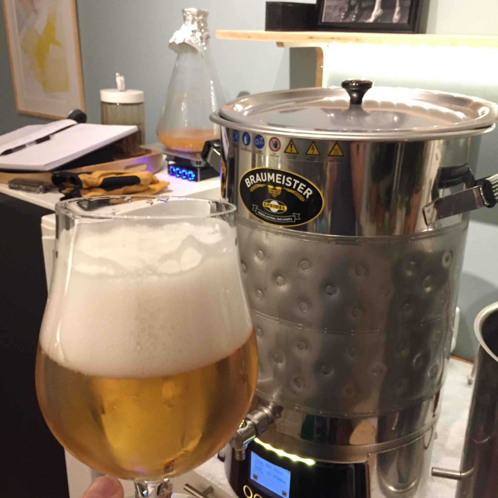

Etablert 2007
Martha's Good & Lovely
Hjemmebryggeri
Håndbrygget øl med karakter og kvalitet. Med en tydelig uhøytidlig bryggeriprofil.
Et personlig arkiv over oppskrifter, etiketter og bryggehistorie, bygget rundt kvalitet, nysgjerrighet og lysten til å lage noe som smaker godt.
Nå
På tap
Dette er ølene som er tilgjengelige akkurat nå.
Arkiv
Bryggeriets øl
Et voksende arkiv av brygg, etiketter, smaksnotater og historikk. Søk, sorter og klikk deg videre inn i hvert enkelt øl.
Lovely for the Good
Historie
Om bryggeriet
Fra de første forsøkene i Trondheim til et mer modent bryggeri med egne etiketter, tydelig identitet og ønsket om å servere godt øl til folk i nærheten.
Helt fra starten har bryggingen – og identiteten til hvert enkelt øl – stått sentralt i bryggeriet. Det legges stor stolthet i å utvikle en unik visuell profil for hvert brygg. Som et barn av 90-tallet bærer både navnet og designet preg av en viss ironi og tørr humor, noe som ble tydelig etablert da navn og logo ble utformet i 2012.
Martha’s Good & Lovely startet som et hjemmebryggeri i 2007, da bryggemester Martin Skei var student og bodde i en toppleilighet på Bakklandet ved Nidelven i Trondheim. En gammel glassballong funnet hjemme hos foreldrene vekket ideen om å brygge eget øl. Dette var før hjemmebrygging virkelig tok av i Norge, og tilgangen på råvarer var begrenset.
De første bryggene ble laget fra ølsett med maltsirup, ferdig tilsatt humle og medfølgende gjær av varierende kvalitet. Utstyret ble kjøpt i en generisk vin- og barbutikk med et noe broket utvalg. Resultatene var likevel gode nok til å gi mersmak, og interessen for bedre kvalitet og flere smaksopplevelser vokste raskt.
Norbrygg-forumet ble tidlig en viktig kunnskapskilde, og særlig bidragene fra Gahr Smith-Gahrsen gjorde inntrykk. Samtidig ble Brewing-TV en stor inspirasjon, og alle episodene ble nærmest studert i detalj.
Jakten på bedre råvarer førte først til Petit Agentur, og senere til Bryggselv, som dukket opp rundt 2009. I årene som fulgte skjøt craft beer-bølgen fart i Norge, og tilgangen på både råvarer og utstyr ble dramatisk forbedret.
I 2010 flyttet bryggeriet til Oslo, hvor nærheten til Bryggselvs lokaler gjorde hobbyen enda mer tilgjengelig. Bryggeriet har siden hatt tilhold flere steder i byen – blant annet på St. Hanshaugen, Iladalen, Grünerløkka, Tøyen og Oppsal.
I 2026 flyttet bryggeriet tilbake til byen det ble startet i, og er nå etablert i Schøningsdalen over Ila - hvor det har god oversikt over hva som rører seg i by og hav, friskt vann fra Jonsvannet, og ny keezer til servering i nye lokaler. Så alt ligger godt tilrette for fortsatt god produksjon og nytelse for de innvidde som har muligheten til å ta turen opp.
Eksperimentering har vært en rød tråd gjennom hele historien, men i dag er fokuset i større grad rettet mot stabile, gjennomarbeidede oppskrifter og høy kvalitet – med mål om å servere godt øl til venner og naboer. Samtidig ligger det alltid en mulighet for nye eksperimenter i fremtiden.
Utstyr
Bryggeriet startet med en enkel, tynnbunnet kjele til oppvarming av vann og maltsirup, samt gjæringskar i form av glassballong og etter hvert plastspann.
Etter flyttingen til Oslo ble det tatt i bruk et BIAB-oppsett (Brew In A Bag), bestående av en tykkbunnet kjele, induksjonstopp og meskepose, i tillegg til gjæringskar.
I 2017 ble utstyret oppgradert til et «alt-i-ett»-system: Speidel Braumeister 20L Plus. Senere har bryggeriet også tatt i bruk en Ss Brewtech Brewbucket i rustfritt stål, en Fermzilla 27L Tri-Conical for trykkgjæring, samt en Ferminator for presis temperaturkontroll under gjæring.
Ved siste flytting i Oslo, rundt 2020/2021, gikk bryggeriet bort fra flasking og over til servering fra fat. Et Kegerator X øleskap med fire tappekraner ble installert i en bod under trappen ved kjøkkenet, og har siden vært sentralt i serveringen.
Nå som bryggeriet igjen er lokalisert i Trondheim er hovedoppsettet og arbeidsflyten som følger:
Brygging - Speidel 20L Braumeister Plus
Gjæring - Apollo 30L Snub Nose trykktank plassert i Ferminator for temperaturkontroll.
Kondisjonering og servering - Cornelius-fat 19L, Keezer bygget av fryseboks med 4 tappekraner av typen Intertap Flowmaster.




Ta kontakt
Spørsmål, forespørsler eller innspill?
Send en melding til bryggeriet. Jeg bruker opplysningene dine bare for å kunne svare på henvendelsen.